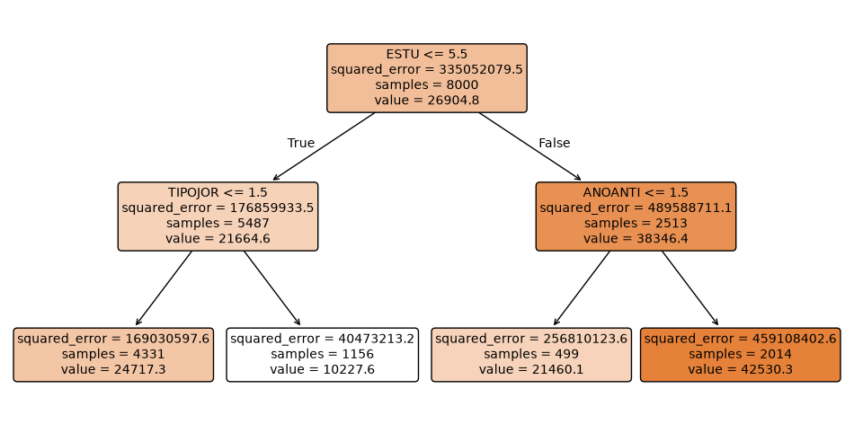
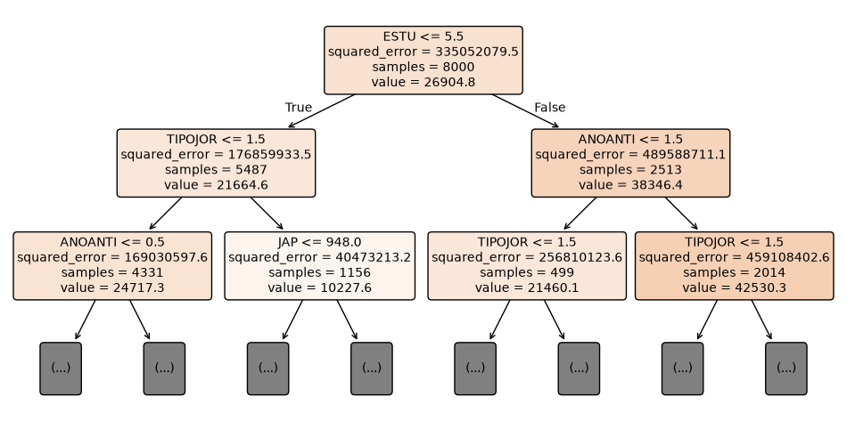
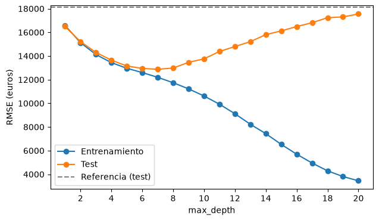
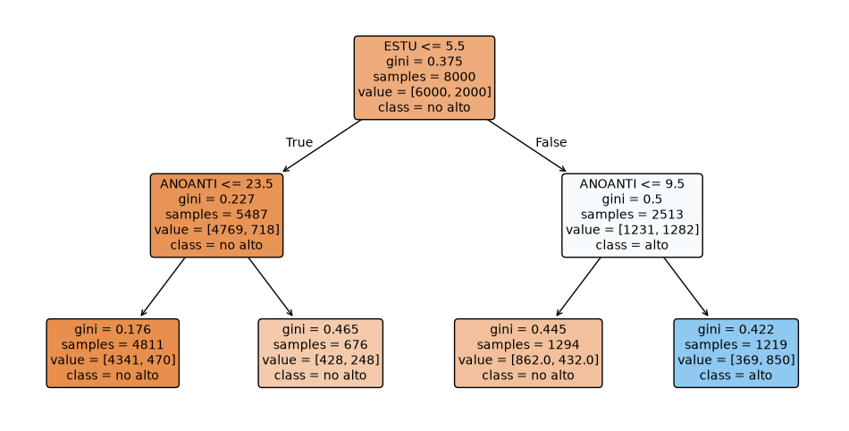
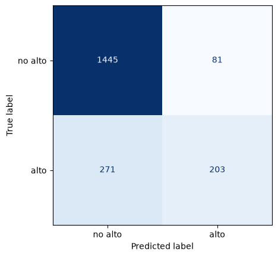
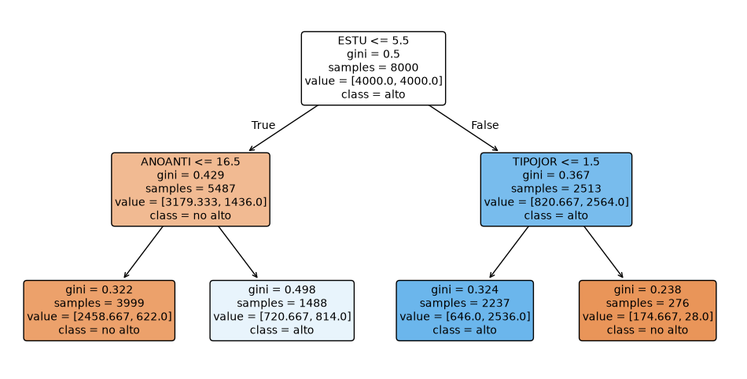
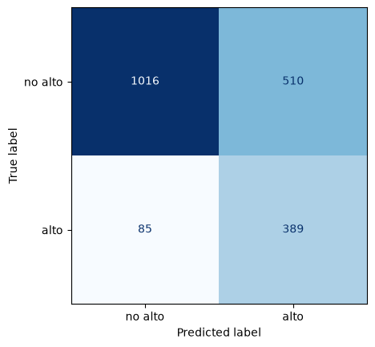

import numpy as np
import pandas as pd
import matplotlib.pyplot as plt
from IPython.display import display
# Árboles de decisión y su dibujo.
from sklearn.tree import DecisionTreeRegressor, DecisionTreeClassifier, plot_tree
# Modelos de referencia, que no usan los predictores.
from sklearn.dummy import DummyRegressor, DummyClassifier
# División en entrenamiento y test, y métricas.
from sklearn.model_selection import train_test_split
from sklearn.metrics import (
root_mean_squared_error, accuracy_score, recall_score,
confusion_matrix, ConfusionMatrixDisplay,
)
SEMILLA = 42Tema 4. Introducción a los árboles de decisión
Versión resuelta, con resultados
Versión resuelta
Incluye las soluciones de los ejercicios y los resultados de ejecutar cada celda. Para trabajar con el cuaderno, descárgalo sin resultados o ábrelo en Colab.
Técnicas Avanzadas de Predicción en Negocios · Cuaderno de práctica (nivel medio)
Datos: Encuesta Cuatrienal de Estructura Salarial 2022 (INE), microdatos.
Qué vamos a hacer
- Árbol de regresión poco profundo. Lo ajustamos, lo dibujamos y vemos cómo elige cada corte.
- Árbol profundo. Lo dejamos crecer sin límite y comparamos su error de entrenamiento y de test.
- Hiperparámetros de
DecisionTreeRegressor. Los que controlan el tamaño del árbol. - Árbol de clasificación. Los mismos pasos con una respuesta binaria: salario alto o no.
Tiempo: 45 minutos. Preparación 5 min, bloque 1 12 min, bloque 2 10 min, bloque 3 8 min y bloque 4 10 min. Hay un ejercicio de lectura del árbol, un ejercicio de código con # TODO y tres «Para pensar» con la respuesta plegada. La ampliación del final es opcional y queda fuera de los 45 minutos.
Las celdas marcadas con «Ejecuta y mira el resultado» contienen un bucle: en clase basta con leer su tabla o su gráfico.
Sin validación cruzada. Hacemos una sola división: 80 % de entrenamiento y 20 % de test. En esta práctica el conjunto de test hace de validación: con él comparamos árboles de distinto tamaño. En la próxima sesión elegiremos los hiperparámetros con validación cruzada sobre el entrenamiento y reservaremos el test para la evaluación final.
0. Preparación
Usa el entorno tap del curso.
Datos y población
Cargamos la EES 2022 desde la web del curso y conservamos la población de los temas 2 y 3: salario positivo y hasta el percentil 99. Trabajamos con 10 000 trabajadores elegidos al azar. La celda tarda unos segundos porque descarga los datos.
# Datos de la EES 2022 en la web del curso (separador: tabulación).
URL_DATOS = "https://juandmontoro.github.io/tap/data/EES_2022.tab"
df = pd.read_csv(URL_DATOS, sep="\t", low_memory=False)
df.columns = df.columns.str.replace('"', "").str.strip()
# Población de los temas 2 y 3: salario positivo y hasta el percentil 99.
tope = df["RETRINOIN"].quantile(0.99)
salario_admitido = (df["RETRINOIN"] > 0) & (df["RETRINOIN"] <= tope)
limpio = df[salario_admitido]
# 10 000 trabajadores elegidos al azar.
datos = limpio.sample(n=10000, random_state=SEMILLA).reset_index(drop=True)
print("Observaciones:", len(datos))Observaciones: 10000Respuesta y predictores
La respuesta es el salario bruto anual (RETRINOIN, en euros). Usamos ocho predictores:
| Variable | Qué mide | Códigos |
|---|---|---|
ESTU |
Nivel de estudios | 1 menos que primaria, 2 primaria, 3 secundaria primera etapa, 4 secundaria segunda etapa, 5 FP de grado superior, 6 diplomados universitarios, 7 licenciados y doctores |
ANOS2 |
Grupo de edad | 1 menos de 20 años, 2 de 20 a 29, 3 de 30 a 39, 4 de 40 a 49, 5 de 50 a 59, 6 más de 59 |
ANOANTI |
Antigüedad en la empresa | años |
JAP |
Jornada anual pactada | horas |
SEXO |
Sexo | 1 hombre, 6 mujer |
TIPOJOR |
Tipo de jornada | 1 completa, 2 parcial |
TIPOCON |
Tipo de contrato | 1 indefinido, 2 temporal |
RESPONSA |
Tareas de supervisión | 0 no, 1 sí |
El árbol trata los códigos como números. Un corte como ESTU <= 5.5 separa los códigos 1 a 5 (sin título universitario) de los códigos 6 y 7 (con título universitario). Esto tiene sentido cuando los códigos siguen un orden (ESTU, ANOS2) o cuando la variable solo tiene dos valores. La ocupación (CNO1), el sector (CNACE) o la región (NUTS1) tienen códigos sin orden: un corte agruparía categorías al azar, y habría que crear columnas indicadoras como en los temas 2 y 3. Las dejamos fuera para que el árbol se lea con facilidad.
Los árboles tampoco necesitan escalar los predictores: un corte depende solo del orden de los valores. Por eso aquí no hay Pipeline ni preprocesador.
PREDICTORES = ["ESTU", "ANOS2", "ANOANTI", "JAP", "SEXO", "TIPOJOR", "TIPOCON", "RESPONSA"]
# X contiene los predictores e y, el salario.
X = datos[PREDICTORES]
y = datos["RETRINOIN"]
# Una sola división: 80 % entrenamiento y 20 % test.
X_train, X_test, y_train, y_test = train_test_split(X, y, test_size=0.2, random_state=SEMILLA)
print("Entrenamiento:", len(X_train), "| test:", len(X_test))Entrenamiento: 8000 | test: 2000Bloque 1. Árbol de regresión poco profundo (12 min)
1.1 Ajuste y dibujo
Ajustamos un árbol con dos niveles de cortes (max_depth=2). Tendrá como mucho cuatro hojas.
Python que usamos aquí -
DecisionTreeRegressor(max_depth=2, random_state=SEMILLA)crea un árbol de regresión con dos niveles de cortes.random_statedecide los empates entre cortes igual de buenos. -plot_tree(arbol, feature_names=..., filled=True, rounded=True, precision=1)dibuja el árbol.filled=Truecolorea cada caja según su predicción yprecision=1muestra las cifras con un decimal.
# Árbol de regresión con dos niveles de cortes.
arbol_corto = DecisionTreeRegressor(max_depth=2, random_state=SEMILLA)
arbol_corto.fit(X_train, y_train)
# Dibujo del árbol ajustado.
plt.figure(figsize=(12, 6))
plot_tree(arbol_corto, feature_names=PREDICTORES, filled=True, rounded=True, precision=1, fontsize=10)
plt.show()
Cómo se lee. Cada caja es un nodo con el grupo de trabajadores del entrenamiento que llegan a él.
- La primera línea es la condición del corte. Los trabajadores que la cumplen van a la izquierda (True) y el resto, a la derecha (False).
squared_error: varianza del salario dentro del nodo, en euros al cuadrado. Es el error cuadrático medio que se comete si se predice a todos con la media del nodo. Multiplicado porsamplesda la RSS del nodo (apartado 1.2).samples: número de trabajadores del entrenamiento en el nodo.value: salario medio de esos trabajadores. En las cajas de abajo, las hojas, es la predicción del árbol.
El primer corte es ESTU <= 5.5: separa a los trabajadores sin título universitario de los que lo tienen. Cuanto más oscura es una caja, mayor es su salario medio.
1.2 Cómo elige el árbol un corte
Un corte reparte las observaciones en dos grupos. Cada grupo se predice con su salario medio, y el corte se valora con la suma de los errores al cuadrado de los dos grupos (RSS). El árbol prueba todos los predictores y, en cada uno, todos los cortes posibles: los puntos medios entre dos valores consecutivos. Se queda con el corte de menor RSS.
Después repite el mismo cálculo dentro de cada grupo, y así hasta llegar a max_depth. Cada corte se elige sin mirar los cortes siguientes: es un algoritmo codicioso (greedy).
Hacemos el cálculo para el primer corte con ESTU. Lo expresamos como el porcentaje de la RSS del nodo raíz (sin ningún corte) que elimina cada corte.
Ejecuta y mira el resultado.
# RSS del nodo raíz: todos los trabajadores predichos con el salario medio.
rss_raiz = ((y_train - y_train.mean()) ** 2).sum()
# Valores distintos de ESTU en el entrenamiento, ordenados.
valores_estu = np.sort(X_train["ESTU"].unique())
filas = []
for i in range(len(valores_estu) - 1):
# Corte candidato: punto medio entre dos valores consecutivos.
corte = (valores_estu[i] + valores_estu[i + 1]) / 2
# Salarios de los dos grupos que crea el corte.
izquierda = y_train[X_train["ESTU"] <= corte]
derecha = y_train[X_train["ESTU"] > corte]
# RSS del corte: cada grupo se predice con su media.
rss_corte = ((izquierda - izquierda.mean()) ** 2).sum() + ((derecha - derecha.mean()) ** 2).sum()
# Porcentaje de la RSS de la raíz que elimina el corte.
reduccion = 100 * (1 - rss_corte / rss_raiz)
filas.append({"corte": corte, "obs. izquierda": len(izquierda),
"obs. derecha": len(derecha), "reducción de la RSS (%)": round(reduccion, 1)})
tabla_cortes = pd.DataFrame(filas)
tabla_cortes| corte | obs. izquierda | obs. derecha | reducción de la RSS (%) | |
|---|---|---|---|---|
| 0 | 1.5 | 46 | 7954 | 0.3 |
| 1 | 2.5 | 1213 | 6787 | 4.2 |
| 2 | 3.5 | 3085 | 4915 | 11.8 |
| 3 | 4.5 | 4708 | 3292 | 16.8 |
| 4 | 5.5 | 5487 | 2513 | 17.9 |
| 5 | 6.5 | 6688 | 1312 | 16.2 |
Cómo se lee. La mayor reducción de la RSS está en el corte 5,5, el mismo que eligió el árbol en la raíz. El árbol hizo este cálculo con los ocho predictores, y ningún corte de los otros siete redujo más la RSS.
1.3 La predicción es la media de la hoja
Comprobamos la hoja de la izquierda: trabajadores sin título universitario (ESTU <= 5.5) y con jornada completa (TIPOJOR <= 1.5).
# Trabajadores del entrenamiento que cumplen las dos condiciones de la hoja.
en_hoja = (X_train["ESTU"] <= 5.5) & (X_train["TIPOJOR"] <= 1.5)
print("Trabajadores en la hoja:", en_hoja.sum())
print("Salario medio en la hoja:", round(y_train[en_hoja].mean()), "euros")Trabajadores en la hoja: 4331
Salario medio en la hoja: 24717 eurosLas dos cifras coinciden con samples y value de la primera hoja del dibujo. Todos los trabajadores que caen en una hoja reciben la misma predicción.
Ejercicio 1 (lectura del árbol)
Una trabajadora con licenciatura (ESTU = 7), 10 años de antigüedad (ANOANTI = 10) y jornada completa (TIPOJOR = 1). Recorre a mano el árbol del apartado 1.1. ¿En qué hoja cae y qué salario predice? ¿Influye su jornada en la predicción?
Solución. ESTU = 7 no cumple ESTU <= 5.5: va a la derecha. Allí el corte es ANOANTI <= 1.5, que no se cumple con 10 años: va otra vez a la derecha. Cae en la última hoja, y la predicción es su value. La jornada no influye, porque TIPOJOR solo aparece en la rama izquierda. Las variables que no están en el camino de una observación no cambian su predicción.
Comprueba tu respuesta: la celda siguiente crea la trabajadora a partir de la primera fila del test y pide la predicción a arbol_corto.
# Copia de la primera fila del test (doble corchete: se conserva como tabla).
trabajadora = X_test.iloc[[0]].copy()
# Valores del enunciado.
trabajadora["ESTU"] = 7
trabajadora["ANOANTI"] = 10
trabajadora["TIPOJOR"] = 1
# Predicción del árbol corto.
prediccion_trabajadora = arbol_corto.predict(trabajadora)
print("Predicción:", round(prediccion_trabajadora[0]), "euros")Predicción: 42530 euros1.4 Error de entrenamiento y de test
Medimos el error con el RMSE, en euros: es el error típico de la predicción del salario y pesa más los errores grandes. Lo calculamos en el conjunto de entrenamiento y en el de test. Como referencia usamos un modelo que no mira los predictores y predice a todos el salario medio del entrenamiento.
Python que usamos aquí -
DummyRegressor(strategy="mean")es el modelo de referencia: predice para todas las filas la media de la respuesta de su entrenamiento.
# Modelo de referencia: predice a todos el salario medio del entrenamiento.
referencia = DummyRegressor(strategy="mean")
referencia.fit(X_train, y_train)
rmse_referencia_test = root_mean_squared_error(y_test, referencia.predict(X_test))
# RMSE del árbol corto en entrenamiento y en test.
rmse_corto_train = root_mean_squared_error(y_train, arbol_corto.predict(X_train))
rmse_corto_test = root_mean_squared_error(y_test, arbol_corto.predict(X_test))
print("Árbol corto | RMSE entrenamiento:", round(rmse_corto_train), "| RMSE test:", round(rmse_corto_test))
print("Referencia | RMSE test:", round(rmse_referencia_test))Árbol corto | RMSE entrenamiento: 15131 | RMSE test: 15217
Referencia | RMSE test: 18148Cómo se lee. Los RMSE de entrenamiento y de test del árbol corto son parecidos: con cuatro hojas de cientos de trabajadores, el árbol no puede ajustarse a casos concretos del entrenamiento. Su RMSE de test es menor que el de la referencia, así que los cuatro grupos explican una parte de las diferencias de salario.
Bloque 2. Árbol profundo (10 min)
2.1 Árbol sin límite de profundidad
Con los valores por defecto (max_depth=None, min_samples_leaf=1) el árbol sigue cortando mientras pueda separar a los trabajadores de un nodo.
Python que usamos aquí -
arbol.get_depth()devuelve la profundidad del árbol ajustado yarbol.get_n_leaves(), su número de hojas.
# Árbol con los valores por defecto: sin límite de profundidad.
arbol_profundo = DecisionTreeRegressor(random_state=SEMILLA)
arbol_profundo.fit(X_train, y_train)
print("Profundidad:", arbol_profundo.get_depth(), "| hojas:", arbol_profundo.get_n_leaves())
# RMSE del árbol profundo en entrenamiento y en test.
rmse_profundo_train = root_mean_squared_error(y_train, arbol_profundo.predict(X_train))
rmse_profundo_test = root_mean_squared_error(y_test, arbol_profundo.predict(X_test))
print("Árbol profundo | RMSE entrenamiento:", round(rmse_profundo_train), "| RMSE test:", round(rmse_profundo_test))
print("Árbol corto | RMSE entrenamiento:", round(rmse_corto_train), "| RMSE test:", round(rmse_corto_test))
print("Referencia | RMSE test:", round(rmse_referencia_test))Profundidad: 29 | hojas: 7477
Árbol profundo | RMSE entrenamiento: 2861 | RMSE test: 17461
Árbol corto | RMSE entrenamiento: 15131 | RMSE test: 15217
Referencia | RMSE test: 18148Cómo se lee. El árbol profundo tiene miles de hojas, muchas con un solo trabajador. Su RMSE de entrenamiento es muy pequeño. Si no llega a cero es porque hay trabajadores con los mismos valores en los ocho predictores y salarios distintos, y ningún corte puede separarlos. En test, su RMSE es mayor que el del árbol corto y queda cerca del de la referencia. El árbol ha aprendido las particularidades de los trabajadores del entrenamiento, que no se repiten en el test: es sobreajuste.
2.2 Dibujo de los primeros niveles
Un dibujo con miles de hojas no se puede leer. Con plot_tree(..., max_depth=2) dibujamos solo los dos primeros niveles. Las cajas (...) indican ramas que siguen por debajo.
# Solo los dos primeros niveles del árbol profundo.
plt.figure(figsize=(12, 6))
plot_tree(arbol_profundo, max_depth=2, feature_names=PREDICTORES, filled=True, rounded=True,
precision=1, fontsize=10)
plt.show()
Cómo se lee. Los dos primeros niveles son los del árbol corto. Cada corte se elige sin mirar los siguientes, así que el árbol profundo empieza igual y después sigue cortando.
2.3 Error y profundidad
Ajustamos árboles con max_depth de 1 a 20 y anotamos el RMSE en entrenamiento y en test. Aquí usamos un bucle porque queremos el error en nuestro conjunto de test, y las funciones de scikit-learn que recorren un hiperparámetro (validation_curve, GridSearchCV) usan validación cruzada. La celda tarda unos segundos.
Ejecuta y mira el resultado.
profundidades = range(1, 21)
filas = []
for profundidad in profundidades:
# Árbol con la profundidad de esta vuelta.
arbol = DecisionTreeRegressor(max_depth=profundidad, random_state=SEMILLA)
arbol.fit(X_train, y_train)
# RMSE en entrenamiento y en test.
rmse_train = root_mean_squared_error(y_train, arbol.predict(X_train))
rmse_test = root_mean_squared_error(y_test, arbol.predict(X_test))
filas.append({"max_depth": profundidad, "hojas": arbol.get_n_leaves(),
"RMSE entrenamiento": rmse_train, "RMSE test": rmse_test})
tabla_profundidad = pd.DataFrame(filas)
# Gráfico: RMSE frente a profundidad.
plt.figure(figsize=(7, 4))
plt.plot(tabla_profundidad["max_depth"], tabla_profundidad["RMSE entrenamiento"], marker="o", label="Entrenamiento")
plt.plot(tabla_profundidad["max_depth"], tabla_profundidad["RMSE test"], marker="o", label="Test")
plt.axhline(rmse_referencia_test, color="grey", linestyle="--", label="Referencia (test)")
plt.xlabel("max_depth")
plt.ylabel("RMSE (euros)")
plt.xticks(range(2, 21, 2))
plt.legend()
plt.show()
# Profundidad con menor RMSE de test.
fila_minimo = tabla_profundidad["RMSE test"].idxmin()
print("Menor RMSE de test con max_depth =", tabla_profundidad.loc[fila_minimo, "max_depth"],
"y", tabla_profundidad.loc[fila_minimo, "hojas"], "hojas:", round(tabla_profundidad.loc[fila_minimo, "RMSE test"]), "euros")
Menor RMSE de test con max_depth = 7 y 125 hojas: 12879 eurosCómo se lee. El RMSE de entrenamiento baja siempre al aumentar la profundidad. El de test baja al principio, llega a un mínimo y vuelve a subir: a partir de ahí, cada nivel nuevo ajusta ruido del entrenamiento. Es la curva de complejidad del tema 1, ahora con la profundidad del árbol.
Para pensar 1
Si eligiéramos max_depth con el RMSE de entrenamiento, ¿qué profundidad saldría? ¿Y qué problema tiene elegirla con el RMSE de test, como acabamos de hacer?
Respuesta
Con el RMSE de entrenamiento saldría la mayor profundidad probada, porque ese error siempre baja al añadir cortes. Si la elegimos con el test, el RMSE de test de la profundidad elegida tiende a quedarse corto como estimación del error con datos nuevos, porque lo hemos usado para decidir. Por eso en la próxima sesión elegiremos la profundidad con validación cruzada en el entrenamiento (GridSearchCV, tema 2) y dejaremos el test para el final.
Bloque 3. Hiperparámetros de DecisionTreeRegressor (8 min)
Son los mismos en DecisionTreeClassifier, salvo el criterio de corte y class_weight (bloque 4).
| Hiperparámetro | Qué controla | Efecto |
|---|---|---|
criterion |
Medida que minimiza cada corte: squared_error en regresión, gini o entropy en clasificación |
Cambia los cortes elegidos |
max_depth |
Número máximo de cortes seguidos | Más profundidad, árbol más complejo |
max_leaf_nodes |
Número máximo de hojas | Más hojas, árbol más complejo |
min_samples_leaf |
Observaciones mínimas en cada hoja | Más observaciones, árbol más simple |
min_samples_split |
Observaciones mínimas que necesita un nodo para cortarse | Más observaciones, árbol más simple |
ccp_alpha |
Penalización α de la poda (se ve en teoría) | Más α, árbol más simple |
random_state |
Semilla para los empates entre cortes | Fija el resultado |
Por defecto el árbol crece sin límite (max_depth=None, min_samples_leaf=1, min_samples_split=2). max_depth, max_leaf_nodes, min_samples_leaf y min_samples_split detienen el crecimiento antes de ajustar (poda previa).
Ejercicio 2
Limita el árbol con min_samples_leaf=50 en lugar de max_depth. Calcula su profundidad, sus hojas y su RMSE en entrenamiento y en test.
# TODO: árbol con al menos 50 observaciones en cada hoja.
arbol_hoja50 = DecisionTreeRegressor(min_samples_leaf=50, random_state=SEMILLA)
arbol_hoja50.fit(X_train, y_train)
print("Profundidad:", arbol_hoja50.get_depth(), "| hojas:", arbol_hoja50.get_n_leaves())
# TODO: RMSE en entrenamiento y en test.
rmse_hoja50_train = root_mean_squared_error(y_train, arbol_hoja50.predict(X_train))
rmse_hoja50_test = root_mean_squared_error(y_test, arbol_hoja50.predict(X_test))
print("RMSE entrenamiento:", round(rmse_hoja50_train), "| RMSE test:", round(rmse_hoja50_test))Profundidad: 12 | hojas: 120
RMSE entrenamiento: 12089 | RMSE test: 12534Compara con el árbol profundo (2.1) y con la mejor profundidad de 2.3. ¿Qué árbol tiene menor RMSE de test? ¿Cuál tiene más diferencia entre entrenamiento y test?
Solución. Con min_samples_leaf=50 el árbol es más profundo que el de la mejor max_depth, pero cada hoja promedia al menos 50 salarios. Su RMSE de test es el menor de los tres y la diferencia entre entrenamiento y test es mucho menor que la del árbol profundo. Con min_samples_leaf=50 una rama sigue cortándose mientras los dos grupos del corte tengan al menos 50 trabajadores, así que las ramas con muchos trabajadores llegan más abajo que las que tienen pocos.
Para pensar 2
Hay 8 000 trabajadores en el entrenamiento. ¿Qué árbol se obtiene con min_samples_leaf=5000? ¿Qué predice?
Respuesta
Ningún corte puede dejar 5 000 trabajadores a cada lado, porque harían falta 10 000. El árbol se queda en el nodo raíz, con una sola hoja, y predice a todos el salario medio del entrenamiento: es el modelo de referencia.
Bloque 4. Árbol de clasificación (10 min)
4.1 Respuesta binaria: salario alto
Un trabajador tiene salario alto (1, un positivo) si su salario supera el percentil 75 del entrenamiento, y 0 en otro caso, como en la entrega E1. El umbral se calcula solo con el entrenamiento y se aplica también al test. El salario no está entre los predictores.
# Umbral: percentil 75 del salario en el entrenamiento.
p75 = y_train.quantile(0.75)
# Respuesta binaria en entrenamiento y en test, con el mismo umbral.
alto_train = (y_train > p75).astype(int)
alto_test = (y_test > p75).astype(int)
print("P75:", round(p75), "euros | proporción de positivos en el entrenamiento:", round(alto_train.mean(), 3))P75: 34851 euros | proporción de positivos en el entrenamiento: 0.254.2 Árbol poco profundo
DecisionTreeClassifier elige cada corte con el mismo procedimiento del apartado 1.2, con otra medida del error: el índice de Gini de los dos grupos. En un nodo con una proporción \(p\) de positivos, \(\text{Gini} = 2\,p\,(1-p)\). Vale 0 si todos los trabajadores del nodo son de la misma clase y 0,5 si hay la mitad de cada una. El corte elegido es el que más reduce el Gini medio de los dos grupos, ponderado por su número de observaciones.
Python que usamos aquí -
plot_tree(..., class_names=["no alto", "alto"])pone nombre a las clases 0 y 1 en el dibujo.
# Árbol de clasificación con dos niveles de cortes.
arbol_clas = DecisionTreeClassifier(max_depth=2, random_state=SEMILLA)
arbol_clas.fit(X_train, alto_train)
plt.figure(figsize=(12, 6))
plot_tree(arbol_clas, feature_names=PREDICTORES, class_names=["no alto", "alto"],
filled=True, rounded=True, precision=3, fontsize=10)
plt.show()
Cómo se lee.
gini: índice de Gini del nodo.samples: trabajadores del entrenamiento en el nodo.value: número de trabajadores de cada clase en el nodo, en el orden [no alto, alto].class: la clase más frecuente del nodo. En las hojas, es la clase predicha.
La probabilidad predicha de salario alto es la proporción de positivos de la hoja: el segundo número de value dividido entre samples. Con cuatro hojas, el árbol solo puede dar cuatro probabilidades distintas.
# Probabilidades de salario alto en el entrenamiento: columna 1 de predict_proba.
prob_alto_train = arbol_clas.predict_proba(X_train)[:, 1]
print("Probabilidades distintas:", np.unique(prob_alto_train).round(3))Probabilidades distintas: [0.098 0.334 0.367 0.697]4.3 Exactitud y matriz de confusión en test
Medimos la exactitud (proporción de aciertos) y miramos la matriz de confusión para separar los dos tipos de error. La referencia es un clasificador que predice a todos la clase más frecuente del entrenamiento (no alto).
Python que usamos aquí -
DummyClassifier(strategy="most_frequent")predice para todas las filas la clase más frecuente de su entrenamiento.
# Clase predicha por el árbol en el test.
pred_clas_test = arbol_clas.predict(X_test)
# Clasificador de referencia: predice a todos la clase más frecuente.
referencia_clas = DummyClassifier(strategy="most_frequent")
referencia_clas.fit(X_train, alto_train)
exactitud_referencia = accuracy_score(alto_test, referencia_clas.predict(X_test))
# Exactitud y sensibilidad del árbol en test.
print("Árbol | exactitud test:", round(accuracy_score(alto_test, pred_clas_test), 3),
"| sensibilidad test:", round(recall_score(alto_test, pred_clas_test), 3))
print("Referencia | exactitud test:", round(exactitud_referencia, 3))
# Matriz de confusión en test: filas = observado, columnas = predicho.
matriz_corto = confusion_matrix(alto_test, pred_clas_test)
ConfusionMatrixDisplay(matriz_corto, display_labels=["no alto", "alto"]).plot(cmap="Blues", colorbar=False)
plt.show()Árbol | exactitud test: 0.824 | sensibilidad test: 0.428
Referencia | exactitud test: 0.763
Cómo se lee la matriz. Fila 0, columna 0: verdaderos negativos (VN). Fila 0, columna 1: falsos positivos (FP, error de tipo I). Fila 1, columna 0: falsos negativos (FN, error de tipo II). Fila 1, columna 1: verdaderos positivos (VP). Solo una hoja predice «alto», así que el árbol deja sin detectar a muchos trabajadores de salario alto: son los falsos negativos. La sensibilidad, VP / (VP + FN), mide qué parte de los positivos detecta.
4.4 Árbol de clasificación profundo
# Árbol de clasificación sin límite de profundidad.
arbol_clas_profundo = DecisionTreeClassifier(random_state=SEMILLA)
arbol_clas_profundo.fit(X_train, alto_train)
print("Profundidad:", arbol_clas_profundo.get_depth(), "| hojas:", arbol_clas_profundo.get_n_leaves())
# Exactitud en entrenamiento y en test.
exactitud_prof_train = accuracy_score(alto_train, arbol_clas_profundo.predict(X_train))
exactitud_prof_test = accuracy_score(alto_test, arbol_clas_profundo.predict(X_test))
print("Árbol profundo | exactitud entrenamiento:", round(exactitud_prof_train, 3), "| exactitud test:", round(exactitud_prof_test, 3))
print("Árbol corto | exactitud test:", round(accuracy_score(alto_test, pred_clas_test), 3))Profundidad: 26 | hojas: 1740
Árbol profundo | exactitud entrenamiento: 0.989 | exactitud test: 0.794
Árbol corto | exactitud test: 0.824Cómo se lee. El árbol profundo acierta casi todo en el entrenamiento y menos que el árbol corto en el test: es el mismo sobreajuste del bloque 2.
Para pensar 3
¿Qué probabilidades de salario alto da el árbol profundo? Piensa en cuántos trabajadores hay en sus hojas.
Respuesta
Muchas hojas tienen uno o pocos trabajadores, todos de la misma clase. La proporción de positivos de esas hojas es 0 o 1, así que el árbol da probabilidades de 0 o 1 a casi todos los trabajadores, también en el test. Si el trabajador es de la otra clase, la probabilidad asignada a su clase es 0, y una métrica de probabilidades como la log-loss (tema 2) castiga mucho ese error. Puedes comprobarlo con np.unique(arbol_clas_profundo.predict_proba(X_test)[:, 1]).
Qué viene después
- Elegir
max_depthomin_samples_leafcon validación cruzada en el entrenamiento (GridSearchCV, tema 2), y usar el test una sola vez al final. - Un árbol profundo cambia mucho si cambian los datos de entrenamiento. El bagging y el random forest promedian muchos árboles profundos para reducir esa variabilidad.
Ampliación (opcional)
Fuera de los 45 minutos de la práctica.
En el tema 2 vimos que los pesos de estimación cambian el modelo cuando una clase es poco frecuente. Ajusta el árbol de dos niveles con class_weight="balanced", que da más peso a los positivos. Dibújalo y calcula su sensibilidad en test y su matriz de confusión.
# TODO: árbol de dos niveles con pesos equilibrados.
arbol_clas_pesos = DecisionTreeClassifier(max_depth=2, class_weight="balanced", random_state=SEMILLA)
arbol_clas_pesos.fit(X_train, alto_train)
plt.figure(figsize=(12, 6))
plot_tree(arbol_clas_pesos, feature_names=PREDICTORES, class_names=["no alto", "alto"],
filled=True, rounded=True, precision=3, fontsize=10)
plt.show()
# TODO: clase predicha en test y sensibilidad en test.
pred_pesos_test = arbol_clas_pesos.predict(X_test)
sensibilidad_pesos = recall_score(alto_test, pred_pesos_test)
print("Sensibilidad test:", round(sensibilidad_pesos, 3))
# TODO: matriz de confusión en test.
matriz_pesos = confusion_matrix(alto_test, pred_pesos_test)
ConfusionMatrixDisplay(matriz_pesos, display_labels=["no alto", "alto"]).plot(cmap="Blues", colorbar=False)
plt.show()
Sensibilidad test: 0.821
Compara con el árbol de 4.2 y 4.3. ¿Cambian los cortes? ¿Cuántas hojas predicen «alto»? ¿Qué casillas de la matriz suben y cuáles bajan?
Solución. Con pesos equilibrados, cada positivo cuenta como tres negativos (hay un 25 % de positivos), y eso cambia el Gini de cada corte: el primer corte sigue siendo ESTU <= 5.5, pero los del segundo nivel cambian. Ahora dos hojas predicen «alto». Suben los verdaderos positivos y los falsos positivos, y bajan los falsos negativos y los verdaderos negativos. La sensibilidad en test sube mucho y la exactitud baja. En el dibujo, value ya no cuenta trabajadores: suma sus pesos, y por eso la raíz tiene el mismo valor en las dos clases.